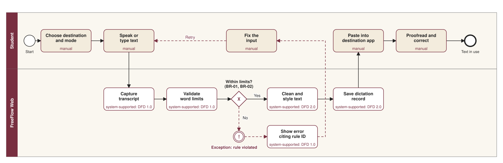
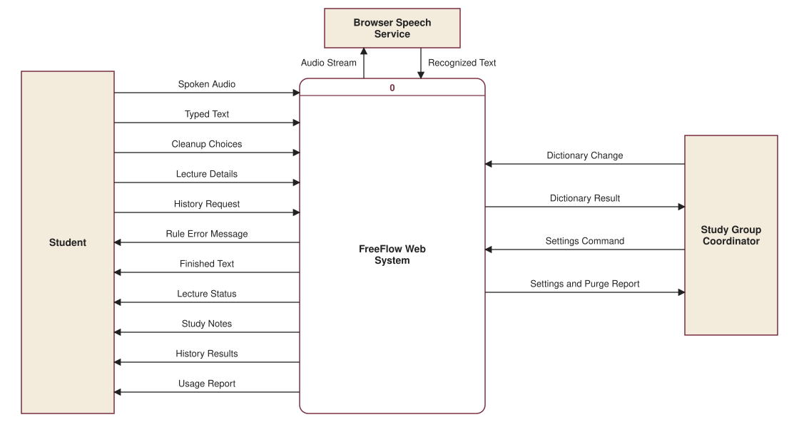
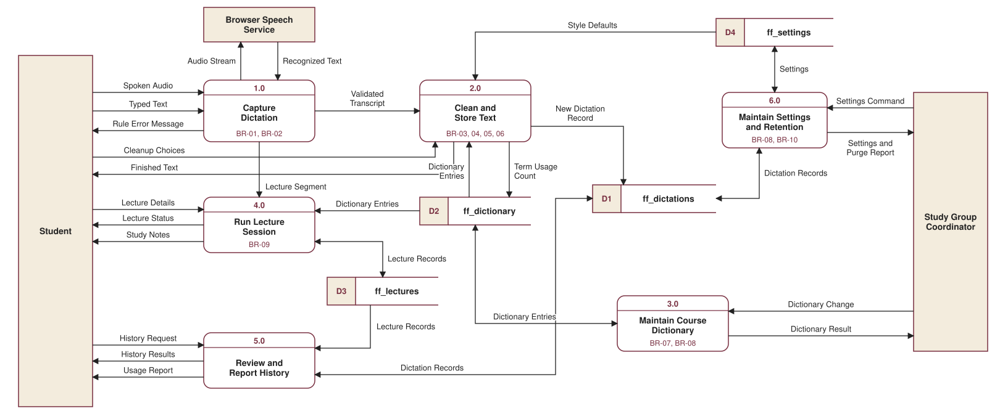
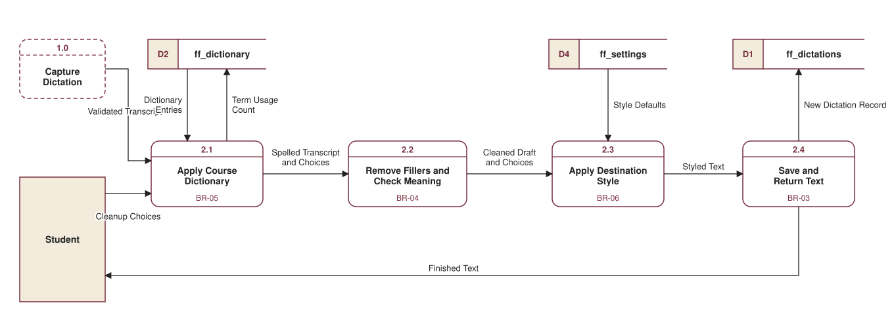
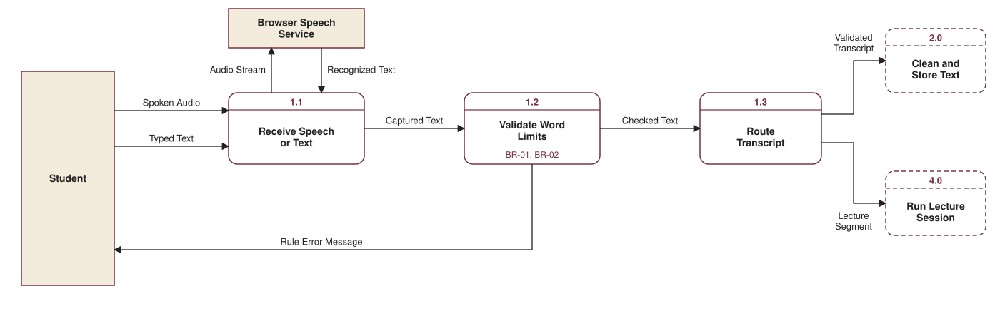

How this system works
Static reference page. It explains who FreeFlow Web is for, what it must do, and how data and work move through it.
Target user and need
Primary user group: Business students who sit through long lectures and write constantly on laptops and need to turn speech into clean notes and text without paying for a dictation subscription.
Persona (fictional): Maya Torres is a junior in a 75-minute management course. Typing notes means missing what is said, and plain speech-to-text leaves fillers and misspelled course terms. Maya needs usable notes and clean text at no cost.
Secondary stakeholder: A study group coordinator who keeps the shared course vocabulary accurate and sets how long records are kept.
Value model: free service
- Who benefits: students who get clean text and notes, and coordinators whose group shares one set of course terms.
- Who bears the cost: the volunteer maintainer gives time. Hosting and the browser's speech recognition are free, so no user pays.
- What keeps it going: open-source code on free hosting. The coordinator role keeps the vocabulary current, as constraints C-01 and C-02 require.
Requirements
Functional requirements
- FR-01
- The system shall capture a transcript from the microphone or from typed text.
- FR-02
- The system shall reject a transcript that breaks a word limit and show the business rule ID.
- FR-03
- The system shall clean a transcript by applying the course dictionary, removing fillers and self-corrections, and applying the destination's style.
- FR-04
- The system shall save each processed dictation and show its raw and finished text, with a copy button.
- FR-05
- The system shall search and filter saved dictations by text, destination, mode, and date range.
- FR-06
- The system shall let a student pin, delete, or transform a saved dictation without changing its raw transcript.
- FR-07
- The system shall move a lecture session through the statuses recording, processing, and done.
- FR-08
- The system shall generate study notes for a finished lecture: summary, key terms, exam points, and action items.
- FR-09
- The system shall report usage for a chosen period: dictations, words, estimated typing time saved, and lectures.
- FR-10
- The system shall let the coordinator add, edit, and delete course dictionary entries.
- FR-11
- The system shall let the coordinator set default styles and the retention period, and run a retention check that reports what was deleted.
- FR-12
- The system shall restore its synthetic sample data when "Reset demo data" is pressed.
Non-functional requirements
- NFR-01
- Performance: The system shall process a 3,000-word transcript in 500 ms or less on a typical laptop, and show the measured time with each result.
- NFR-02
- Usability: Every action blocked by a business rule shall show a message that begins with that rule's ID.
- NFR-03
- Privacy: With typed input, the system shall make 0 network requests after the page loads, and shall store all data in browser storage.
- NFR-04
- Reliability: Saved records shall still be present after the browser page is reloaded.
- NFR-05
- Compatibility: Where a browser has no speech recognition, the microphone button shall be disabled with a notice, and typed input shall still work.
Business rules
Constraints
- C-01
- The system shall run only in a browser, with data in localStorage and with no login, database server, or paid service.
- C-02
- The system shall be hosted for free at a public link that needs no sign-in.
- C-03
- The system shall be built by one student and delivered by December 4, 2026.
- C-04
- The system shall use synthetic sample data only and shall be labeled a prototype.
Process models
DFDs use Gane and Sarson notation. A dashed box on a Level-1 DFD is a neighboring process from Level-0. A two-headed arrow is a read before an update of a data store. Select a diagram to open it full size. All diagrams were generated as SVG by a Python script written with Claude Code.





Data stores
Store names match the localStorage keys in this page's code exactly.
| Store | Name | Key field | Other fields | Written by | Read by |
|---|---|---|---|---|---|
| D1 | ff_dictations | id | createdAt, mode, status, destination, style, source, asrText, finalText, numWords, numDictionaryReplacements, cleanMs, pinned, transformName, ruleNote | 2.0, 5.0, 6.0 | 5.0, 6.0 |
| D2 | ff_dictionary | id | phrase, replacement, isSnippet, source, frequencyUsed, createdAt | 2.0, 3.0 | 2.0, 3.0, 4.0 |
| D3 | ff_lectures | id | courseCode, title, status, startedAt, endedAt, segments, notes | 4.0 | 4.0, 5.0 |
| D4 | ff_settings | id | retentionDays, styles, lastPurgeAt | 6.0 | 2.0, 6.0 |
How the BPM maps to the DFD
| BPM task | Type | DFD process | Why |
|---|---|---|---|
| Choose destination and mode | Manual | Provides input to 2.0 | Only the student knows where the text is going. |
| Speak or type text | Manual | Provides input to 1.0 | The ideas are the student's own. |
| Capture transcript | System-supported | 1.0 (1.1) | The browser turns speech into text. |
| Validate word limits | System-supported | 1.0 (1.2) | A fixed rule that software applies consistently. |
| Show error citing rule ID | System-supported | 1.0 (1.2) | The exception path tells the student which rule blocked the input. |
| Fix the input | Manual | Provides input to 1.0 | Only the student can say what was meant. |
| Clean and style text | System-supported | 2.0 (2.1 to 2.3) | Repetitive editing is the main thing worth automating. |
| Save dictation record | System-supported | 2.0 (2.4) | Students should not have to file their own history. |
| Paste into destination app | Manual | Receives output of 2.0 | A web page cannot type into other apps, so this stays manual on purpose. |
| Proofread and correct | Manual | None | Rule-based cleanup can make mistakes, so the student stays responsible for the final text. |
Where each business rule appears
| Rule | Process | Where to see it |
|---|---|---|
| BR-01, BR-02 | 1.0 (1.2), and the BPM decision | Dictate and Lectures screens |
| BR-03 | 2.0 (2.4) | Dictate and History screens |
| BR-04 | 2.0 (2.2) | Dictate screen, "Only fillers" sample |
| BR-05 | 2.0 (2.1) | Dictate screen, default sample |
| BR-06 | 2.0 (2.3) | Dictate screen, destination list |
| BR-07 | 3.0 | Dictionary screen |
| BR-08 | 3.0 and 6.0 | Open #dictionary or #settings as a Student |
| BR-09 | 4.0 | Lectures screen |
| BR-10 | 6.0 | Settings screen |
What this prototype cannot do
- It is inspired by FreeFlow, a native Mac dictation app that cleans text with the Claude API. A paid API is not allowed here, so this version uses rule-based cleanup. It handles common fillers and corrections but does not understand meaning.
- It cannot paste into other apps or record system audio, because a web page has no access to them.
- In browsers such as Chrome, speech recognition may send microphone audio to the browser maker's speech service. Typed input never leaves the page.
- Roles are a demo selector, not real security. Anyone can change the role or browser data. "Reset demo data" is a test control for graders, so it is not shown as a business process in the DFD.
- Data lives in one browser only, and the role selector returns to Student when the page is reloaded.
Read the AI use log, which lists the prompts and changes used to build this project.